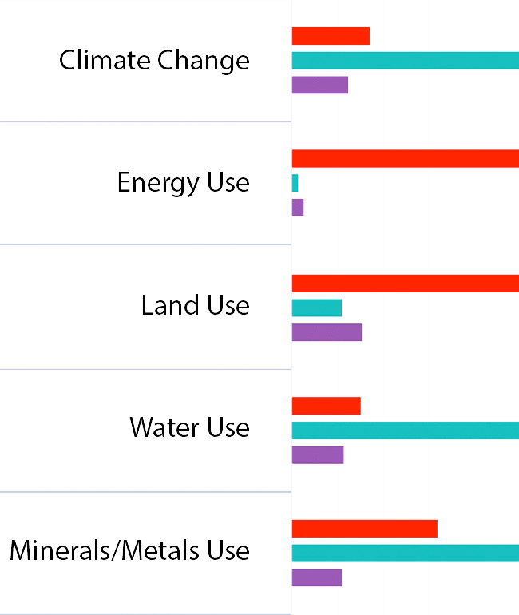
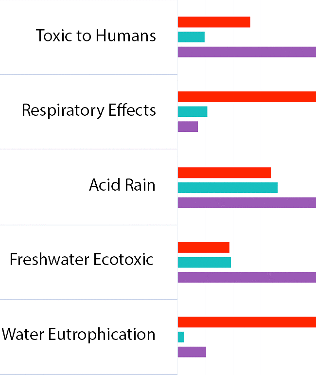

Southeast Georgia Coalition
Set your goals
Adjust Industry Levels to reflect new technology iniatives to generate new revenue streams, create jobs and increase your community's positive outcomes.
1. Value-Added
2. Quality Jobs
3. Clean Water
4. Clean Energy
5. Green Materials
6. Local Agriculture
7. Family Friendly
8. Health+Happiness
9. Inclusiveness
10. Creates Beauty



